AwaRes processes a low-resolution global view by default. When additional detail is required, it invokes a structured tool-call to request only specific high-resolution sub-regions — then answers conditioned on both views.
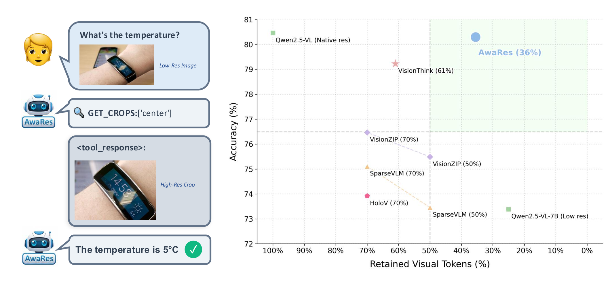
AwaRes matches full-resolution performance while using only 36% of visual tokens, outperforming all efficient baselines across six benchmarks.
| Model | Chart | RTR | Doc | RTR | OCR | RTR | POPE | RTR | Real | RTR | V* | RTR | Avg | RTR |
|---|---|---|---|---|---|---|---|---|---|---|---|---|---|---|
| Qwen2.5-VL-7B | 79.80 | 1.00 | 94.00 | 1.00 | 81.10 | 1.00 | 87.87 | 1.00 | 68.80 | 1.00 | 71.20 | 1.00 | 80.46 | 1.00 |
| Qwen2.5-VL-7B-LR | 65.00 | 0.25 | 91.00 | 0.25 | 70.70 | 0.25 | 84.41 | 0.25 | 66.00 | 0.25 | 63.20 | 0.25 | 73.39 | 0.25 |
| Holo-V (70%) | 69.32 | 0.70 | 76.40 | 0.70 | 72.40 | 0.70 | 87.37 | 0.70 | 68.89 | 0.70 | 69.11 | 0.70 | 73.92 | 0.70 |
| SparseVLM (70%) | 75.80 | 0.70 | 87.20 | 0.70 | 79.30 | 0.70 | 85.40 | 0.70 | 68.50 | 0.70 | 54.45 | 0.70 | 75.11 | 0.70 |
| VisionZIP (70%) | 76.72 | 0.70 | 90.75 | 0.70 | 72.70 | 0.70 | 87.86 | 0.70 | 64.84 | 0.70 | 65.97 | 0.70 | 76.47 | 0.70 |
| VisionThink | 79.90 | 1.15 | 90.35 | 0.32 | 80.10 | 0.83 | 86.70 | 0.34 | 66.60 | 0.55 | 71.73 | 0.49 | 79.23 | 0.61 |
| AwaRes (Ours) | 80.64 | 0.32 | 94.43 | 0.28 | 81.30 | 0.42 | 85.73 | 0.27 | 68.50 | 0.43 | 71.20 | 0.42 | 80.30 | 0.36 |
Table 1: RTR = fraction of visual tokens retained (lower is better). AwaRes matches full-resolution at 36% compute.
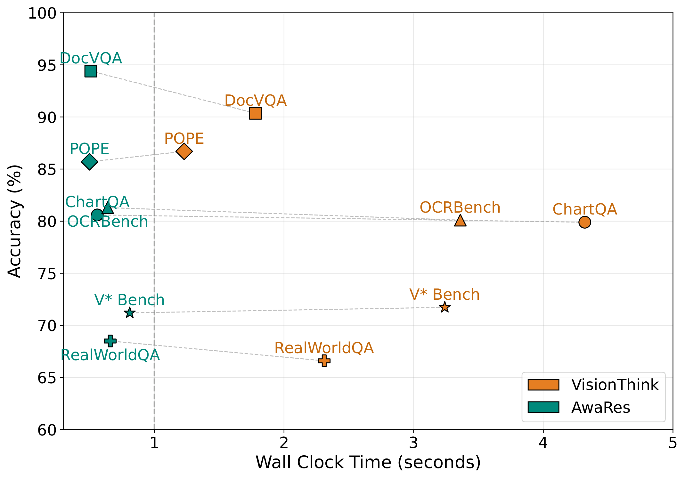
Examples of AwaRes adaptively selecting crops across charts, documents, and natural images. Each shows the question, tool call, low-res input, and retrieved high-res crop.
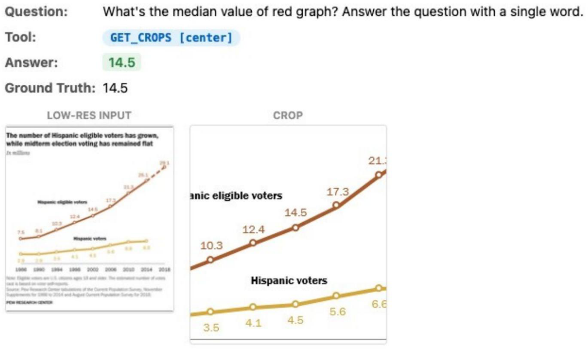
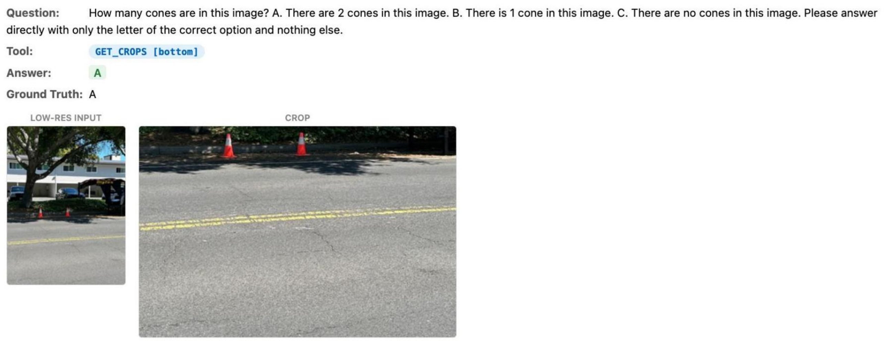
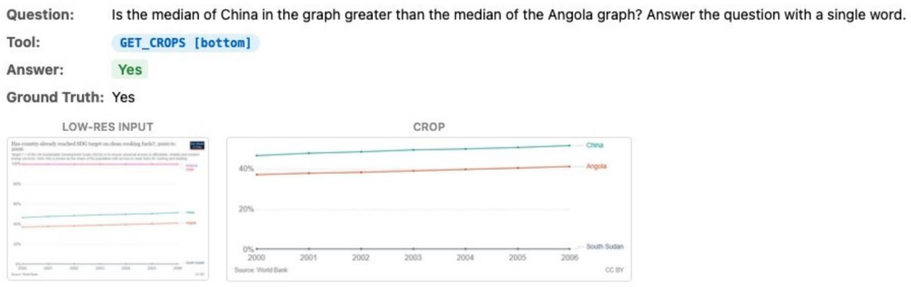
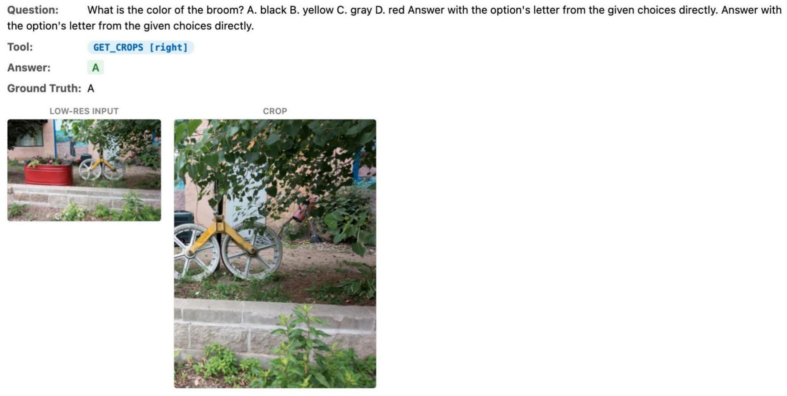
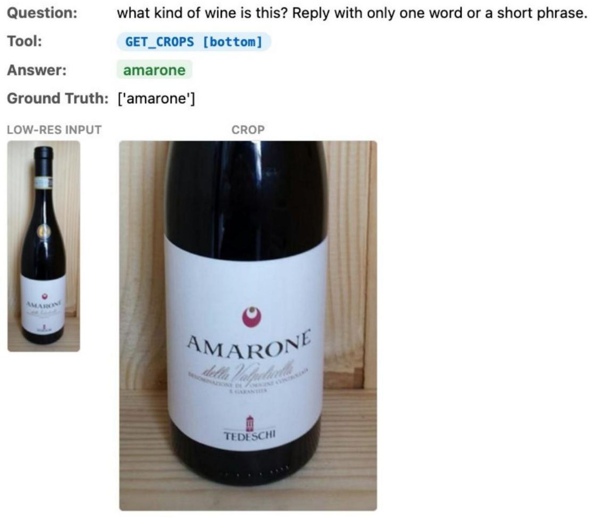
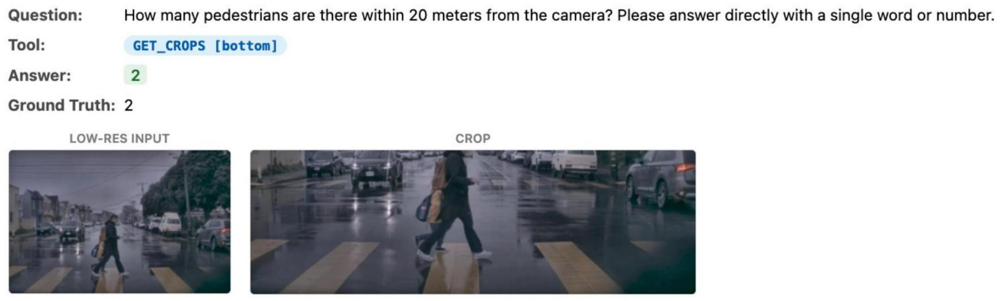
AwaRes learns a coupled-decision policy (CDP) that jointly decides whether additional resolution is needed and where to acquire it, by selecting a subset of crops from a predefined candidate set.
An LLM judge compares low-res vs. high-res outputs against ground truth to determine when cropping is needed.
An oracle grounding model localizes the visual evidence, producing bounding boxes mapped to a discrete crop set via IoU.
Supervised fine-tuning on multi-turn tool-use trajectories teaches the model the tool protocol and yields a reference policy.
RL with a composite reward balancing correctness against crop-cost penalties refines tool usage for efficiency.
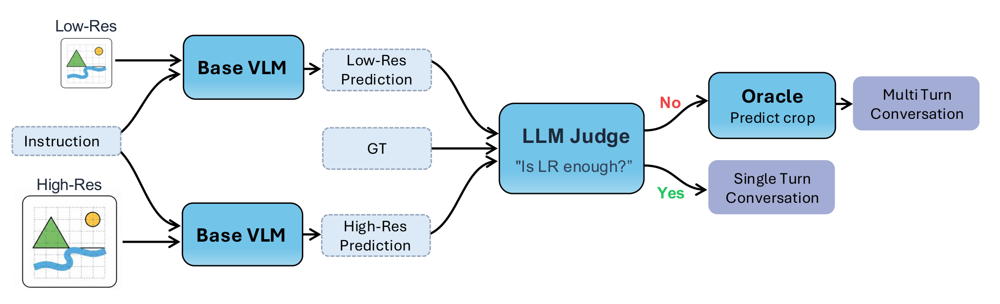
The oracle grounding model localizes answer regions, which are mapped to discrete crops for training.
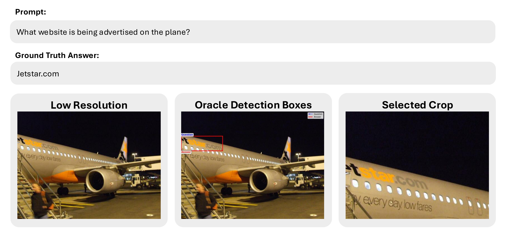
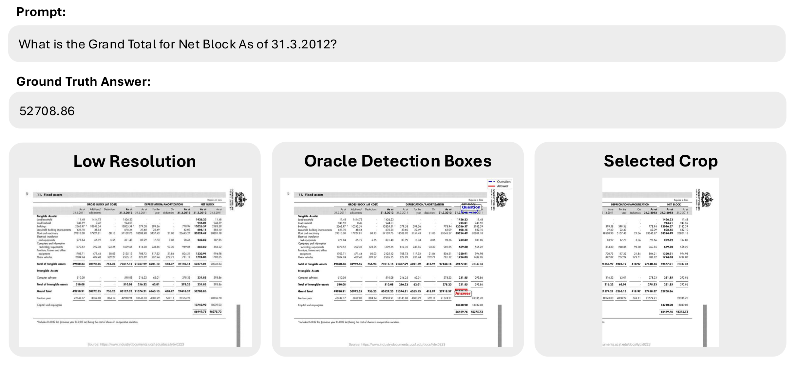
AwaRes is trained in two stages: supervised cold-start (SFT) to teach the tool-calling protocol, followed by multi-turn GRPO to optimize the accuracy–efficiency trade-off.
We fine-tune on a mixture of direct-answer trajectories (single turn, low-res only) and tool-call-then-answer trajectories (two turns with crop retrieval). This teaches the coupled-decision policy (CDP)—jointly deciding whether to escalate and where to crop—and yields a reference policy $\pi_{\text{ref}}$ for the RL stage.
We minimize a weighted negative log-likelihood over assistant tokens:
where $h_t$ is the dialogue history at step $t$ and $w_t$ is a per-token weight. We set $w_t{=}5$ for the tool-call turn (1 otherwise) to stabilize learning of the first-turn decision—this single change boosts accuracy from 77.9→79.7 and achieves 100% tool-call formatting validity. We use trajectory-level SFT, optimizing the full two-turn interaction as a single sample. After SFT, the model is frozen as $\pi_{\text{ref}}$.
The SFT model has learned the tool-calling protocol but still uses it inefficiently, often requesting crops when the low-resolution view already suffices. We apply GRPO on full multi-turn interactions to improve tool usage and overall efficiency, using a composite reward:
$R_{\text{ans}}$ is the cosine similarity between sentence-transformer embeddings of the predicted and ground-truth answers. The tool cost is asymmetric—missing a necessary crop is penalized more heavily than making an unnecessary request:
For each prompt, we sample $G{=}8$ trajectories and compute group-relative advantages. The policy is optimized with a PPO-style clipped objective regularized toward $\pi_{\text{ref}}$:
GRPO shifts the tool-usage distribution closer to the oracle annotations while also discovering new crop strategies not present in the supervision. The resulting policy matches full-resolution accuracy (80.3 vs. 80.5) while using only 36% of the visual tokens.
Full training hyperparameters and ablation details are provided in the paper.
If you find AwaRes useful in your research, please consider citing:
@article{shabtay2026look,
title={Look Where It Matters: High-Resolution Crops Retrieval for Efficient VLMs},
author={Shabtay, Nimrod and Kimhi, Moshe and Spector, Artem and Haray, Sivan and Rivlin, Ehud and Baskin,
Chaim and Giryes, Raja and Schwartz, Eli},
journal={arXiv preprint arXiv:2603.16932},
year={2026}
}